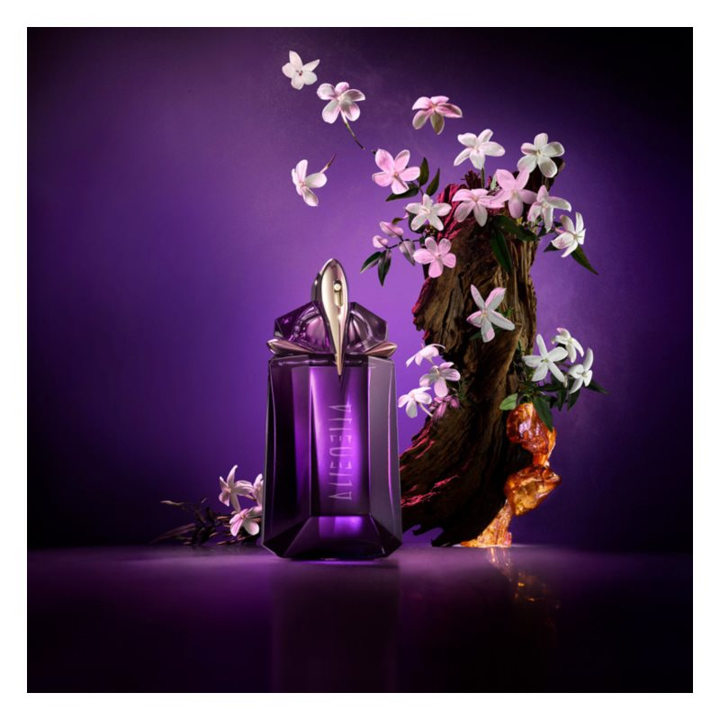

| Note de varf | IASOMIE |
| Note de inima | CASMIR |
| Note de baza | CHIHILIMBAR |
| Grupe de parfumuri | ORIENTALE, LEMMNOASE |
Flaconul acestui elixir amintește forma unei pietre sacre. Arată ca o bijuterie, din ale cărei fațete radiază un parfum misterios. Chipul apei de parfum Mugler Alien este Jourdan Dunn, activistă, mamă și supermodel. Evocă perfect personalitatea neobișnuită a parfumului și îi insuflă un nou caracter.
